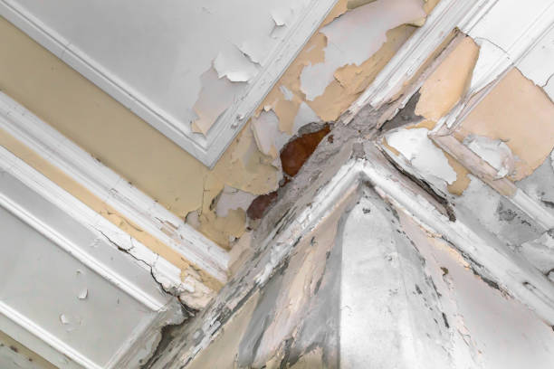

Loop Pennsylvania
info@waterdamagesusa.pro
Loop Pennsylvania
info@waterdamagesusa.pro

Mold can cause serious damage. Our mold remediation services in Loop Pennsylvania use advanced techniques to detect, remove, and prevent future growth, ensuring a healthier home environment.
Click Here To Call Us (877) 848-1711When disaster strikes, trust our professional team to handle your water damage, fire damage, and mold remediation needs in Loop Pennsylvania . We specialize in providing prompt, reliable, and efficient restoration services to help you recover quickly from unexpected events.
Water Damage Restoration in Loop Pennsylvania
Water damage can occur from a variety of sources—leaks, floods, broken pipes, or natural disasters. Regardless of the cause, our certified technicians are available 24/7 to minimize damage and restore your property to its pre-damage condition. We use state-of-the-art drying equipment and advanced techniques to prevent long-term structural issues.
Fire Damage Restoration in Loop Pennsylvania
Fires can leave behind extensive damage, both from flames and smoke. Our team has years of experience handling fire damage cleanup in Loop Pennsylvania ensuring your property is fully restored. We address structural repairs, soot removal, smoke odor elimination, and full fire damage remediation, so you can get back to your normal life as quickly as possible.
Mold Remediation Services in Loop Pennsylvania
Mold growth is a common issue after water damage and can pose significant health risks. Our expert mold remediation team in Loop Pennsylvania uses advanced mold removal techniques to ensure your home or business is safe and free from mold infestations. We not only remove visible mold but also address the root cause to prevent future growth.
Why Choose Us for Damage Restoration in Loop Pennsylvania ?
24/7 emergency service for water, fire, and mold issues
IICRC-certified technicians
Advanced equipment for efficient damage restoration
Quick, reliable, and affordable service
If you're facing water damage, fire damage, or mold issues in Loop Pennsylvania contact us today for a comprehensive inspection and free estimate. Let us restore your property to its best condition with professional care and expertise!
Residential & commercial Water Damage, Fire Damage and Mold Remediation
Quality services at affordable prices
Immediate 24/ 7 emergency services


When disaster strikes, whether it's a burst pipe, a house fire, or the invasive growth of mold, you need a trusted, professional team that can respond quickly and restore your property to its original condition. At Water Damage, Fire Damage and Mold Remediation, we specialize in reliable water, fire, and mold damage repair services in Loop Pennsylvania and the surrounding areas.
Our experienced technicians are equipped with advanced tools and techniques to handle any emergency, ensuring fast response times and efficient repairs. We understand the stress and disruption caused by water and fire damage, which is why we provide comprehensive services, including water extraction, fire damage restoration, and mold remediation.
We are committed to restoring your home or business to its pre-damage state. Whether dealing with flood damage or the aftermath of a fire, our team will work tirelessly to eliminate harmful mold, clean up fire debris, and dry out your property to prevent further damage. Our professional services not only restore your property but also enhance its safety, making it safe and livable once again.
If you are looking for a reliable, expert damage repair company in Loop Pennsylvania we are here to help. Contact us today for immediate assistance, and let us restore your peace of mind with our 24/7 emergency services.
Residential & commercial Water Damage, Fire Damage and Mold Remediation
Quality services at affordable prices
Immediate 24/ 7 emergency services
Navigating the aftermath of fire damage is challenging — both emotionally and financially. One of the most strategic ways to manage recovery is through effective insurance claim assistance. At Water Damage, Fire Damage and Mold Remediation, we provide comprehensive insurance claim support services for fire damage in Loop Pennsylvania helping you reclaim what you deserve.
Understanding the claims process can be overwhelming, especially during a time of distress. Our experienced team steps in to guide you through every aspect of the claims process, ensuring you are well-informed and confident in your approach.
Once a fire incident occurs, we conduct a detailed assessment of the damage to provide the documentation necessary for your insurance claim. Our team understands what information insurance companies will require and can offer you relevant insights to enhance your claims process success.
From start to finish, we advocate on your behalf, negotiating with insurance adjusters and addressing any questions they raise. Our goal is to ensure that you receive fair compensation for both your damage and living expenses during your time of recovery.
At Water Damage, Fire Damage and Mold Remediation, we believe that your focus should be on healing and restoration, not paperwork. For reliable insurance claim assistance for fire damage trust our dedicated team to help you navigate this critical aspect of fire recovery.

Mold can pose a serious health hazard in your home, particularly when moisture levels rise after water damage. At Water Damage, Fire Damage and Mold Remediation, we specialize in residential mold remediation services ensuring that your home is safe, healthy, and free of harmful mold spores.
Recognizing the importance of addressing mold issues promptly, our trained team acts quickly upon your call. We conduct a thorough inspection to assess the extent of mold growth and moisture sources contributing to the problem. Through our advanced equipment and inspection techniques, we identify areas that require immediate attention.
Once the inspection is complete, we develop a custom remediation plan tailored to your home’s unique needs. Our process involves removing contaminated materials, treating affected surfaces, and implementing preventive measures to mitigate future mold growth.
Following mold removal, our team ensures that air quality remains safe by utilizing HEPA filtration devices. We want you to feel confident in your home’s safety, so our focus is not just on remediation but also on education, helping you understand how to prevent future mold problems.
At Water Damage, Fire Damage and Mold Remediation, we pride ourselves on delivering quality mold remediation services in Loop Pennsylvania with strong attention to detail and customer satisfaction. Choose us to reclaim peace of mind and a mold-free living environment.

Businesses face unique challenges when it comes to mold growth. Quick response is critical to minimize disruption and protect your employees and customers. At Water Damage, Fire Damage and Mold Remediation, we offer specialized commercial mold remediation services in Loop Pennsylvania ensuring a safe and healthy environment for all.
Why Choose Us? Our team understands the urgency of mold issues in commercial settings and is equipped to handle large and small-scale remediation efforts. We work around your schedule to minimize downtime and impact on your operations. Choose Water Damage, Fire Damage and Mold Remediation for your commercial mold remediation needs in Loop Pennsylvania – where professionalism and thoroughness meet.

Black mold, often associated with serious health issues, can be a daunting challenge for homeowners. If you suspect that you have black mold in your residence, prompt attention is critical. At Water Damage, Fire Damage and Mold Remediation, we specialize in professional black mold removal services committed to ensuring your home is safe and healthy.
Understanding the risks posed by black mold, our experienced team is trained in effective assessment and remediation strategies. Once contacted, we respond swiftly to conduct a comprehensive inspection, identifying the source of mold growth and assessing the level of contamination.
Our removal process is methodical and thorough. We employ specialized containment techniques to prevent spores from spreading during removal, ensuring your home remains free of further contamination. We remove any affected materials, followed by thorough cleaning and treatment of surfaces where mold was present.
After the removal process, our team conducts air quality tests to verify the effectiveness of our remediation efforts. We believe that communication is key during this process, so we ensure that you stay informed every step of the way.
For effective black mold removal services choose Water Damage, Fire Damage and Mold Remediation. Our commitment to safety and quality garners trust, ensuring a mold-free environment for you and your family.

Early detection of mold is essential for preventing health issues and structural damage. At Water Damage, Fire Damage and Mold Remediation, we offer comprehensive mold inspection and testing services to effectively assess and identify potential mold problems in your home or business.
Our trained professionals arrive ready to evaluate your property for signs of mold growth. We conduct meticulous visual inspections, looking for moisture-prone areas, visible mold, and water damage indicators. If we suspect mold presence, we proceed with testing protocols to accurately determine the type and extent of mold issues present.
Using advanced testing methods, such as air sampling and surface swabbing, we collect samples that are sent to a certified laboratory for analysis. This information is critical for developing an effective remediation plan based on the specific type of mold and its potential impact on health.
At Water Damage, Fire Damage and Mold Remediation, we understand the need for timely intervention in mold-related issues. Our team is dedicated to returning clear results and ensuring you understand the inspection process and findings. Choose us for expert mold inspection and testing guiding you toward a safe and mold-free environment.
Attics can create ideal conditions for mold growth, especially if there are leaks or inadequate ventilation. At Water Damage, Fire Damage and Mold Remediation, we provide thorough attic mold remediation services ensuring that your home’s air quality and structure remain sound.
Our process begins with a rigorous inspection to determine the extent of mold contamination in your attic. We also assess potential moisture sources, whether from leaks, humidity, or poor ventilation. Understanding these underlying issues is critical for effective remediation.
Once the assessment is complete, we initiate containment procedures to prevent mold spores from spreading throughout your home during the cleaning process. Our team utilizes specialized equipment to safely remove all contaminated materials while following industry standards for safety and effectiveness.
After removal, we apply protective treatments to safeguard against future mold growth. We also implement ventilation improvements or other solutions tailored specifically to your attic, ensuring that conditions remain unfavorable for mold development.
At Water Damage, Fire Damage and Mold Remediation, our commitment to quality and safety has made us a trusted provider of attic mold remediation . Let us help you reclaim your space and restore a healthy environment in your home.

Basements are often prone to moisture, creating ideal conditions for mold growth. At Water Damage, Fire Damage and Mold Remediation, our Basement Mold Removal services tackle the complexities associated with mold in these often-overlooked spaces. Our skilled team performs detailed inspections to identify moisture sources and effectively remove existing mold, ensuring your basement is dry and safe.
We utilize advanced techniques to stop mold in its tracks while addressing potential moisture problems for the long term. With our experience and commitment to quality service, you can trust Water Damage, Fire Damage and Mold Remediation to restore your basement as a healthy, functional area of your home.

The crawl space beneath your home can often go unnoticed, but water intrusion and humidity can lead to serious mold issues. At Water Damage, Fire Damage and Mold Remediation, we specialize in crawl space mold remediation services ensuring that your home remains safe from the potential hazards of mold development.
When we arrive on-site, our team will conduct a comprehensive assessment of your crawl space to identify mold growth and moisture sources that need to be addressed. Through advanced techniques like moisture detection, we pinpoint areas that require remediation and immediate attention.
Our process begins with containment to ensure that mold spores do not spread during the remediation process. We then remove all affected materials and treat the area to eliminate any residual spores. Our team utilizes effective solutions that respect your family’s health and safety.
Additionally, we aim to address root causes of moisture problems in the crawl space. This might include focused efforts on drainage, insulation repairs, and dehumidification strategies.
At Water Damage, Fire Damage and Mold Remediation, your safety and satisfaction are our top priorities. Count on us for expert crawl space mold remediation in Loop Pennsylvania restoring both your environment and peace of mind.

Bathrooms are often breeding grounds for mold due to high humidity levels and water exposure. At Water Damage, Fire Damage and Mold Remediation, we specialize in Bathroom Mold Removal Services in Loop Pennsylvania ensuring that your bathroom remains a clean and safe space. Our experienced team identifies mold sources, effectively removing present mold and implementing preventive measures to keep your bathroom mold-free.
We emphasize thoroughness and safety throughout the remediation process, using non-toxic methods that protect your family and home. With our exceptional service, you can expect a fresh and inviting bathroom environment. Choose Water Damage, Fire Damage and Mold Remediation to keep your bathroom healthy and beautiful.

Mold can thrive in HVAC systems, which can lead to contamination of your indoor air quality and health issues for occupants. At Water Damage, Fire Damage and Mold Remediation, we specialize in HVAC mold remediation services dedicated to ensuring your air systems are safe and functioning properly.
Our process begins with a thorough inspection of your HVAC systems. Our trained technicians identify signs of mold growth, evaluate the system’s functionality, and outline potential moisture sources conducive to mold development.
We focus on every component of the HVAC system, including ducts, coils, and filters. Our experienced team utilizes specialized equipment and techniques to remove all traces of mold, restoring your HVAC system’s efficiency and safety.
Once remediation is complete, we provide guidance on maintaining a mold-free HVAC system, focusing on regular maintenance schedules, effective humidity control, and filter maintenance.
Choose Water Damage, Fire Damage and Mold Remediation for HVAC mold remediation services where we prioritize your health by ensuring that your indoor air is clean and free of contaminants.

After experiencing water damage, the risk of mold growth increases significantly. At Water Damage, Fire Damage and Mold Remediation, we provide post-water damage mold remediation services helping you protect your home from mold-related issues that could develop after water has intruded.
Why Choose Us? Our team understands the nuances of water damage and the conditions that promote mold growth. We conduct extensive inspections and employ effective strategies to eliminate any existing mold and prevent future occurrences. Choose Water Damage, Fire Damage and Mold Remediation for comprehensive post-water damage mold remediation where our commitment to quality service safeguards your home.
Years Experience
Expert Technicians
Satisfied Clients
Compleate Projects
When disaster strikes, trust Water Damage SanJose to provide expert water damage, fire damage, and mold remediation services across all cities in San Jose, CA. We understand that these emergencies require swift, professional responses to prevent further damage and ensure a safe, healthy environment. Here’s why you should choose us:
Experienced and Certified Experts
At Water Damage SanJose, our team is fully certified and trained in handling the complexities of water, fire, and mold damage. With years of experience in the industry, we are equipped to address even the most challenging restoration needs. Our technicians use state-of-the-art equipment to provide fast, efficient, and thorough services.
24/7 Emergency Services
Disasters don’t wait for business hours, and neither do we. Water Damage SanJose offers 24/7 emergency services to ensure that you receive prompt assistance whenever you need it. Whether it's water flooding your basement, fire damage, or a mold infestation, we’re always ready to help, minimizing the impact on your property.
Comprehensive Damage Restoration
We specialize in full-service restoration, including water extraction, fire damage clean-up, and mold remediation. Our services are designed to restore your property to its pre-damaged condition quickly and effectively, so you can get back to your life without the stress.
Insurance Claims Assistance
Dealing with insurance can be overwhelming. Water Damage SanJose assists with insurance claims, ensuring that the process is as smooth and hassle-free as possible. We work with all major insurance companies to help you recover your costs efficiently.
Choose Water Damage SanJose for reliable, professional, and effective water, fire, and mold remediation services. Let us help you restore peace of mind.
In today's world, ensuring your home remains a safe and comfortable environment is a top priority. Water damage can strike unexpectedly, often leaving behind a trail of destruction that requires immediate attention. At Water Damage, Fire Damage and Mold Remediation, we specialize in residential water damage restoration services . Our expert team is dedicated to restoring your home to its original state, utilizing advanced techniques and state-of-the-art equipment.
Understanding the common causes of water damage is essential. Whether it be from burst pipes, heavy rains, or plumbing failures, the aftermath can lead to mold growth, structural issues, and other serious concerns. That's why we pride ourselves on our rapid response times. When you call us, we arrive promptly to assess the situation and mobilize our resources.
Our process starts with a comprehensive inspection to determine the extent of the damage. We use high-tech moisture detection tools to identify hidden water accumulation, which can often go unnoticed. Once we've outlined the problem areas, we proceed to extract any standing water. Our team employs powerful water extraction equipment, ensuring even the most challenging spaces are cleared of moisture.
Next, we focus on drying and dehumidifying your property. Utilizing industrial-grade fans and dehumidifiers, we systematically eliminate all remnants of moisture. This crucial step helps prevent mold growth, which can set in within a matter of days if left unaddressed.
We understand that water damage restoration is not just a technical process; it’s an emotional journey for homeowners. Our compassionate staff works diligently to keep you informed throughout the restoration process, ensuring you understand every step we take. When it comes to residential water damage restoration Water Damage, Fire Damage and Mold Remediation stands as the beacon of hope for affected homeowners.
In the heart of any thriving business lies a commitment to providing a safe and productive environment for employees and customers alike. When water damage occurs, it can lead to disruptions that result in significant financial losses. At Water Damage, Fire Damage and Mold Remediation, we recognize the urgency of commercial water damage restoration and are here to help businesses respond swiftly to these challenges. Our team specializes in restoring commercial properties, working around your schedule to minimize downtime.
Why Choose Us? Our experts are equipped with the latest technology and training to tackle any level of water damage. We pride ourselves on our efficiency and effectiveness, ensuring that your business is back up and running as soon as possible. With our extensive experience in both small and large commercial properties, you can trust us to handle all aspects of water damage restoration meticulously. We provide tailored solutions that fit your unique business needs, and our commitment to communication guarantees you remain informed throughout the process.
When water intrudes your property, every second counts. Delaying extraction can lead to substantial loss and damage. At Water Damage, Fire Damage and Mold Remediation, we offer Emergency Water Extraction Services providing rapid response and professional water removal that helps prevent mold and further damage. Our certified specialists utilize high-powered pumps and vacuum systems to efficiently extract water from your home or business.
Why choose us? We focus not only on immediate water removal but also on the careful assessment and restoration of affected areas. Our team is trained to identify hidden moisture and potential hazards, ensuring that your restoration plan is comprehensive and effective. With our 24/7 availability, you can count on us to be ready whenever disaster strikes, bringing peace of mind during stressful times.
Flood damage is a critical issue that requires immediate attention. Whether caused by heavy rainfall, melting snow, or an unexpected disaster, floodwaters can carry harmful contaminants that pose significant risks to health and well-being. At Water Damage, Fire Damage and Mold Remediation, we specialize in flood damage cleanup services that emphasize safety, thoroughness, and efficiency.
Our highly trained professionals utilize advanced equipment and techniques to handle flood damage effectively. From the moment we arrive, we assess the situation and implement measures to remove standing water quickly and safely. Following extraction, we focus on cleaning, sanitizing, and drying the affected areas to prevent further complications, such as mold growth or structural issues.
We understand that navigating the aftermath of a flood can be overwhelming. That's why choosing us ensures you have a partner who cares. Our team takes pride in being at the forefront of customer service, offering resources for insurance claims, and being transparent about our process and progress. With a commitment to excellence and safety, we provide comprehensive flood damage cleanup services that residents of Loop Pennsylvania can trust.
Dealing with a sewage backup is not just a nuisance; it's an immediate emergency that poses severe health risks and requires expert intervention. At Water Damage, Fire Damage and Mold Remediation, we understand the gravity of sewage contamination and offer specialized sewage backup cleanup services designed to address this hazardous situation swiftly and effectively.
Sewage backups can occur due to various factors, including blockages, heavy rainfall, or infrastructure failures. Our team is equipped with advanced cleaning and decontamination tools to handle sewage spills safely. We prioritize protecting your health and safety by ensuring that contaminants are removed and that affected areas are thoroughly cleaned, sanitized, and restored.
What makes us stand out is our unwavering commitment to quality and the specialized training of our team members. Each technician is knowledgeable about the safest methods for handling sewage and is prepared to manage emotionally challenging scenarios with professionalism and compassion. If you experience sewage backflow, don’t hesitate; choose Water Damage, Fire Damage and Mold Remediation for cleanup services that restore your home to a safe and healthy state.
Basements are often the first area to suffer in the event of flooding or water intrusion. Due to their unique position below ground level, basements can become breeding grounds for mold and structural damage if not addressed quickly. At Water Damage, Fire Damage and Mold Remediation, we specialize in basement water damage restoration utilizing advanced techniques to dry, clean, and restore your basement effectively. Our goal is to minimize damage and return your basement to a safe, usable space.
Why Choose Us? With a team of trained professionals, we take a thorough approach to basement restoration. Our use of state-of-the-art equipment allows us to detect moisture that might be hidden from view, ensuring that we tackle every ounce of water and prevent future issues. Customers choose us for our reliability and expertise, as we have helped countless homeowners reclaim their basements from water damage.
When severe weather strikes, the aftermath can leave homeowners and business owners grappling with extensive damage. At Water Damage, Fire Damage and Mold Remediation, we understand the challenges posed by storms and offer exceptional storm damage restoration services . Our comprehensive approach ensures that your property is restored effectively, allowing you to regain control after nature’s fury.
Storm damage can take on many forms – from flooding and roof damage to fallen trees and debris. Our team of specialists is trained to assess all types of storm-related damages quickly. We utilize advanced assessment tools to give a clear picture of what repairs are necessary to restore your property safely.
Once we assess the damage, we move quickly into action. Our priority is to stabilize your property and prevent further damage. We have the equipment required to manage any standing water, ensuring that it is extracted promptly. After water removal, we initiate our drying process using powerful industrial fans and dehumidifiers designed for large areas.
In addition to water-related issues, storm damage can also lead to structural problems. Whether a tree has fallen on your home or wind has caused roof damage, our team is equipped to provide repair services. We handle everything from temporary board-ups to full-scale reconstruction, ensuring that your property is safe and secure.
What sets Water Damage, Fire Damage and Mold Remediation apart is our commitment to excellent customer service during the restoration process. We understand that the emotional toll associated with storm damage can be overwhelming, and we focus on providing compassionate support and clear communication throughout your recovery journey. Trust us for your storm damage restoration needs in Loop Pennsylvania ; we are here to help you rebuild and recover.
Water damage can create unsightly and hazardous issues in your home or business, particularly when it affects ceilings and walls. At Water Damage, Fire Damage and Mold Remediation, we specialize in ceiling and wall water damage repair services in Loop Pennsylvania committed to restoring the integrity of your property's structures while ensuring a safe living environment.
The aftermath of a plumbing leak, flood, or storm can lead to discolored stains, peeling paint, and even structural weakening in your ceilings and walls. Our expert team understands the importance of addressing these issues promptly to prevent further damage. Upon arrival, we conduct a thorough evaluation to determine the extent of the damage and develop a targeted repair plan.
We employ sophisticated techniques to address water-damaged ceilings and walls. After containing the source of water damage, we carefully remove any affected drywall or plaster. Our goal is to ensure that repair work is only conducted on visible damage while safeguarding your property’s structure during the process.
Once repairs commence, we approach the project methodically. Our team replaces damaged materials with high-quality products designed for durability. We also treat any underlying issues that may cause future problems, such as mold growth or lingering moisture. Following repairs, we ensure that your walls and ceilings are painted to perfection, matching the existing decor for a seamless look.
At Water Damage, Fire Damage and Mold Remediation, we recognize that dealing with water damage can be a frustrating experience. That's why we provide excellent customer service and clear communication. We keep you informed every step of the way, ensuring you understand the repair process and timeline. When you need ceiling and wall water damage repair you can count on us to restore your property to its original state efficiently and effectively.
Water-damaged carpets and upholstery can harbor mold and odors, making prompt and effective restoration essential. At Water Damage, Fire Damage and Mold Remediation, our Carpet and Upholstery Water Damage Repair services are designed to address the unique challenges associated with fabric damage and ensure a clean, healthy living space.
Our expert team employs specialized cleaning techniques that are effective yet gentle on your fabrics, restoring their appearance while also eliminating potential contaminants. We understand the importance of both aesthetic and health concerns, which is why we prioritize thoroughness in our restoration process. With our extensive knowledge and dedication to customer satisfaction, Water Damage, Fire Damage and Mold Remediation is your go-to solution for restoring your home’s comfort and beauty.
After a water damage incident, the critical next step is drying and dehumidification. Removing moisture from your property is essential to prevent mold growth and structural damage. At Water Damage, Fire Damage and Mold Remediation, we offer comprehensive drying and dehumidification services utilizing advanced equipment and techniques to create an optimal environment for drying. Our professionals understand the science of drying, ensuring your property is returned to a safe and healthy state.
Why Choose Us? Our trained technicians are experts in moisture detection and control. We customize our drying plans based on the unique needs of your property, ensuring that all affected areas are thoroughly dried. We are committed to educating our clients about the drying process and the importance of timely intervention. Choose Water Damage, Fire Damage and Mold Remediation because we are dedicated to restoring your space efficiently and effectively.
Water damage can compromise the very structure of your home or business, making expert repair services a necessity. At Water Damage, Fire Damage and Mold Remediation, we specialize in structural water damage repair ensuring that your property is safe, secure, and restored to its original condition.
The implications of structural water damage can be severe, resulting in weakened foundations, compromised walls, and safety hazards. When you choose us, you’re opting for a team that understands the gravity of these issues and responds with urgency. Our qualified professionals take the time to conduct a thorough inspection, assessing all areas affected by water damage.
Upon identifying the extent of structural damage, we devise a complete restoration plan. Our team has the experience and knowledge to handle everything from rebuilding walls to reinforcing foundations. We use high-quality materials and follow industry best practices to ensure that all repairs provide lasting results.
At Water Damage, Fire Damage and Mold Remediation, we believe in a comprehensive approach to structural water damage repair. We don’t just fix the visible issues; we also address any underlying conditions that might lead to future problems. This forward-thinking mindset ensures that your property remains safe and secure long after we leave.
Communication is vital during the repair process. Our team remains in constant contact with you, updating you on our progress and answering any questions you may have. Our reputation for excellence in structural water damage repair speaks to our commitment to quality and customer service. Trust us with your restoration needs, and let us help you bring your property back to its former glory.
Appliance leaks can lead to serious water damage if not handled quickly. From dishwashers to washing machines, even minor leaks can escalate into major issues quickly. At Water Damage, Fire Damage and Mold Remediation, we provide professional appliance leak water damage repair services ensuring that your home remains safe and dry. We specialize in both the repair of the leak source and the mitigation of resulting water damage.
Why Choose Us? Our experienced team has handled countless appliance leak situations and knows the best practices for dealing with the aftermath. We provide prompt response times and thorough inspections to address not only the visible damage but also any hidden moisture that could lead to mold. Choose Water Damage, Fire Damage and Mold Remediation because we care about your home’s safety and provide lasting solutions for appliance-related water issues .
Your crawl space often remains an overlooked area of your home, but when water damage occurs here, it can lead to significant problems. At Water Damage, Fire Damage and Mold Remediation, we specialize in Crawl Space Water Damage Restoration in Loop Pennsylvania addressing unique challenges related to moisture intrusion in these confined spaces. Our knowledgeable team conducts thorough inspections, identifying the source of water concerns while performing effective water removal and drying services.
We understand that a dry crawl space is vital for the overall health of your home. Our techniques help prevent mold growth and structural deterioration, ensuring that you maintain a safe living environment above. Trust Water Damage, Fire Damage and Mold Remediation to safeguard your crawl spaces with trusted restoration practices, enhancing your home’s living conditions.
Hardwood floors add beauty and value to your home but can be at risk for water damage. At Water Damage, Fire Damage and Mold Remediation, we offer expert Hardwood Floor Water Damage Repair services in Loop Pennsylvania . Our experienced specialists understand the nuances of repairing hardwood floors and are equipped with the skills and tools needed to effectively restore them.
Water can warp, discolor, and damage hardwood flooring if not addressed promptly. Our team uses advanced drying techniques to minimize damage, coupled with repair strategies that ensure your floors look and function as intended. Why partner with us? Our meticulous attention to detail and commitment to professional restoration ensure that your hardwood floors are not only repaired but revitalized. Trust Water Damage, Fire Damage and Mold Remediation to protect and enhance your investment in beautiful flooring.
Frozen pipes can result in devastating water damage when they thaw and burst. At Water Damage, Fire Damage and Mold Remediation, we specialize in Frozen Pipe Water Damage Repair services in Loop Pennsylvania helping you address the aftermath of pipe bursts effectively. Our dedicated team knows how to assess, remove, and mitigate water damage to restore your home to a safe and functional condition.
The remedy to frozen pipe issues isn’t just about cleaning up; it requires a systematic approach to restore the integrity of your home’s plumbing and prevent future occurrences. Our knowledgeable experts will provide comprehensive solutions that ensure your home is safe, secure, and moisture-free. Choose Water Damage, Fire Damage and Mold Remediation to restore peace and comfort to your space after frozen pipe incidents.
Experiencing a fire, even a minor one, can leave behind haunting memories and substantial physical damage. Smoke and soot can infiltrate any surface, creating cleaning challenges. At Water Damage, Fire Damage and Mold Remediation, we specialize in smoke and soot damage cleanup services that ensure your home is fully restored after a fire incident.
The damage caused by smoke and soot is multifaceted; it can affect walls, furniture, and even the air quality in your home. Our trained professionals understand how to handle these delicately. Once you contact us, we’ll promptly assess the damage to understand the types of surfaces affected and create an effective plan for cleanup.
Firstly, we focus on safety. Our team is trained in safety protocols when dealing with fire damage, ensuring the environment is secure for everyone involved. With specialized equipment and cleaning agents, we begin the cleanup process, skillfully removing soot and smoke residues from all surfaces.
After physical cleanup, we also address lingering odors. Smoke can permeate walls and fabrics, making odor removal vital for complete restoration. Utilizing advanced techniques, including ozone treatments, we ensure your home feels like home once again.
Additionally, we take the time to communicate any findings while providing updates throughout the process. Our goal is to return your residence to its original state and provide exceptional overall service.
The aftermath of a fire can be devastating, both emotionally and structurally. At Water Damage, Fire Damage and Mold Remediation, we specialize in structural fire damage restoration committed to helping you recover as seamlessly as possible.
After a fire, property owners are often left with burnt walls, warped structures, and unsafe environments. That’s why our team of experts is committed to providing thorough assessments and comprehensive restoration plans tailored to your specific situation. Upon your call, we arrive promptly to evaluate the damage.
Our first priority is ensuring the safety of the property. Our trained professionals will assess risk factors and begin the restoration process as soon as it is deemed safe to do so. We utilize advanced technology to evaluate structural integrity and identify areas that require repairs.
Once we outline the restoration plan, we begin the essential tasks of removing damaged materials, reconstructing compromised areas, and fortifying structures for future safety. Our goal is to restore the building’s integrity while minimizing interruptions during the restoration process.
At Water Damage, Fire Damage and Mold Remediation, we pride ourselves on impeccable service, transparency, and dedication to our clients. We know that recovery from fire damage can be traumatic, and we aim to alleviate the stress involved. For structural fire damage restoration trust us to help you rebuild your future, starting today.
After a fire, many homeowners’ immediate concern is not just the damage to the structure, but also to their cherished possessions. Fire-damaged furniture presents unique challenges that require expert restoration techniques. At Water Damage, Fire Damage and Mold Remediation, we specialize in fire-damaged furniture restoration services in Loop Pennsylvania ensuring you do not have to replace everything you've lost.
Understanding that furniture can be a significant investment, our team approaches each restoration with meticulous attention to detail. We assess the extent of fire and smoke damage as soon as we arrive. Our goal is to salvage and restore as much of your furniture as possible, allowing you to hold onto those precious items.
We utilize specialized cleaning methods that remove soot, stains, and odors from various types of materials, including wood, upholstery, and metal. Using eco-friendly solutions, we focus on preserving your furniture while ensuring it is thoroughly cleaned and restored to its former glory.
Throughout the restoration process, we maintain open lines of communication, providing you updates while answering any questions you may have. What sets Water Damage, Fire Damage and Mold Remediation apart is our commitment to quality service and customer satisfaction. For fire-damaged furniture restoration in Loop Pennsylvania choose us to protect your memories and restore your valuable possessions.
Odors from smoke can linger long after a fire, creating an uncomfortable and unhealthy living environment. At Water Damage, Fire Damage and Mold Remediation, we specialize in odor removal after fire incidents . Our skilled team utilizes advanced odor removal techniques to ensure that your property not only looks restored but also smells fresh and clean.
Why Choose Us? We understand the science behind odor removal and employ a comprehensive approach to eliminate tough smoke odors. With our experience and specialized tools, we guarantee effective odor removal tailored to your needs. Clients trust our expertise and commitment to providing thorough restoration services.
After a disaster, securing your property is a top priority. At Water Damage, Fire Damage and Mold Remediation, we offer Emergency Board-Up Services in Loop Pennsylvania to help protect your home or business while restoration efforts are underway. With our prompt response, we quickly assess the damage and install secure board-ups to prevent further intrusion of elements or vandalism.
Trust is essential during recovery, and our experienced team understands the importance of prompt and reliable service. We ensure that your property is protected from potential hazards, allowing you to focus on the recovery process. With Water Damage, Fire Damage and Mold Remediation, you’re investing in a team that prioritizes your security and peace of mind during challenging times.
Fire not only damages property but also affects personal belongings, documents, and cherished items. At Water Damage, Fire Damage and Mold Remediation, we provide specialized content cleaning and restoration services after fire incidents in Loop Pennsylvania . Our goal is to salvage and restore your valuable items, ensuring they can be enjoyed once more.
Why Choose Us? Our trained staff understands the importance of your belongings and employs gentle, effective techniques to clean and restore each item. We take pride in our commitment to excellence and thoroughness, helping you recover from a devastating event. Trust Water Damage, Fire Damage and Mold Remediation to handle your content restoration needs with care .
Fires can severely disrupt business operations, leading to financial losses and reputational damage. At Water Damage, Fire Damage and Mold Remediation, we specialize in fire damage restoration for commercial properties . Our dedicated team is prepared to react swiftly to minimize downtime and restore your business to its former state.
Why Choose Us? We recognize the unique challenges that commercial fire restoration presents. With extensive experience in the industry, we tailor our restoration processes to meet the specific needs of your business. Our commitment to communication ensures you’re kept informed every step of the way. Choose Water Damage, Fire Damage and Mold Remediation for your commercial restoration needs where we focus on helping your business recover quickly and efficiently.
Electrical fires can be devastating, often resulting in extensive property damage and posing significant safety risks. At Water Damage, Fire Damage and Mold Remediation, we specialize in electrical fire damage repair services ensuring a comprehensive approach to restoring safety and integrity to your home or business.
Upon reporting a fire incident, our trained technicians arrive swiftly to assess the damage caused by the fire. We understand that electrical fires often leave behind additional hazards that require professional handling. That’s why our first step will focus on ensuring the safety of the property and identifying areas needing urgent attention.
Our skilled professionals are adept at evaluating the electrical systems and wiring that may have been affected by the fire. We prioritize thorough inspections of all electrical components to determine which systems require immediate repairs or replacements.
At Water Damage, Fire Damage and Mold Remediation, we not only focus on repairing visible damage but also address underlying issues that may have caused the fire initially. Our goal is to prevent future incidents by ensuring your electrical systems comply with safety standards and are fully operational.
We understand the emotional toll related to fire damage, and we’re here to help. Our dedicated team provides compassionate support throughout the repair process, ensuring you feel informed and comfortable.
Choose Water Damage, Fire Damage and Mold Remediation for reliable electrical fire damage repair services in Loop Pennsylvania . We combine expertise and care for quality restoration for you and your property.
The kitchen is often the heart of the home, and a fire in this area can be particularly devastating. At Water Damage, Fire Damage and Mold Remediation, we specialize in kitchen fire damage restoration services helping you regain the joy of cooking and family gatherings in a safe environment.
Why Choose Us? Our team is equipped to handle fire damage repairs specific to kitchen areas, from structural repairs to appliance restoration. We focus on restoring the heart of your home, ensuring it is safe and functional. Clients choose us for our dedication to quality and customer satisfaction throughout the restoration process.
When water damage strikes, it’s crucial to act quickly. At Water Damage, Fire Damage and Mold Remediation, we offer expert water damage restoration services in Loop Pennsylvania providing fast and reliable solutions to prevent further damage to your property. Whether it’s from a burst pipe, storm flooding, or appliance failure, our skilled team is ready to restore your home or business to its pre-damage condition.
Our professional water damage restoration services in Loop Pennsylvania include thorough assessment, extraction of standing water, drying, dehumidification, and complete restoration. We use state-of-the-art equipment to ensure every inch of your property is dried and treated. With years of experience in handling all types of water damage, we understand the importance of addressing mold prevention, odor removal, and structural integrity.
We are committed to providing comprehensive water damage restoration in Loop Pennsylvania with minimal disruption. Our team is available 24/7, and we respond promptly to emergencies. We work directly with insurance companies to ensure a hassle-free claims process, making your recovery smooth and stress-free.
Don’t wait for the damage to worsen. If you’re dealing with water damage in Loop Pennsylvania trust Water Damage, Fire Damage and Mold Remediation for expert, reliable, and efficient restoration services. Call us now for immediate assistance, and let us restore your peace of mind.
Indiana County (Indiana meaning 'land of the Indians') derives its name from the so-called 'Indiana Grant of 1768' that the Iroquois Six Nations were forced to make to 'suffering traders' under the Fort Stanwix Treaty of 1768. The Iroquois had controlled much of the Ohio River valley as their hunting grounds since the 17th century, and Anglo-American colonists were moving into the area and wanted to develop it. Traders arranged to force the Iroquois to grant land under the treaty in relations to losses due to Pontiac's Rebellion.
Our team is certified by IICRC and trained in the latest restoration techniques.
We use industrial-grade dehumidifiers, air movers, and moisture meters for effective water damage restoration.
Costs vary based on the extent of the damage. We provide free estimates to give you an accurate quote.
We use advanced techniques like thermal fogging and ozone treatments to eliminate smoke odors.
Contact Water Damage Sanjose immediately. We provide emergency services to minimize damage and start restoration right away.
Act quickly by removing water, drying the area, and contacting professionals for complete restoration.
Yes, untreated water damage can lower property value, which is why prompt restoration is essential.
The timeline varies based on the severity of the damage, but we aim to restore your property as quickly as possible.
Ensure your safety, contact your insurance company, and call Water Damage Sanjose for restoration services.
We handle debris removal, soot cleanup, smoke odor elimination, and structural repairs for fire-damaged properties.
We identify the source, contain the mold, remove affected materials, and treat the area to prevent future growth.
Turn off the main water supply, call Water Damage Sanjose, and document the damage for your insurance.
Musty odors, visible patches, and allergic reactions are common indicators of mold.
Yes, our specialized cleaning techniques effectively remove smoke stains and odors.
It depends on the extent of the mold issue but typically takes a few days to complete.
Proper remediation minimizes the risk, but controlling moisture is key to preventing mold from returning.
Call us or visit our website to schedule a free inspection in Loop Pennsylvania at your convenience.
Our team uses advanced moisture detection tools to assess hidden damage in walls, floors, and ceilings.
Yes, we assist with insurance claims and provide the necessary documentation for your claim process.
We serve all neighborhoods and surrounding areas of Loop Pennsylvania providing comprehensive restoration services.
Yes, mold can grow in hidden areas like behind walls or under floors if moisture is present.
Yes, Water Damage Sanjose is available 24/7 for emergencies like water damage, fire damage, and mold remediation.
Mold can begin growing within 24-48 hours of water exposure. Prompt water removal and drying are crucial.
Yes, Water Damage Sanjose offers free inspections to assess the extent of damage and recommend solutions.
Yes, we follow strict safety protocols and use non-toxic treatments to ensure your family’s safety.
Yes, Water Damage Sanjose provides expert fire damage restoration services to help you recover quickly.
In many cases, we can clean and restore water-damaged carpets, depending on the severity of the damage.
Yes, we provide a satisfaction guarantee to ensure mold is completely removed from your property.
Most insurance policies cover fire damage. We can work with your insurer to make the claims process seamless.
Minor spills can be cleaned up, but professional services are essential for significant water damage to ensure complete drying and mold prevention.
Fire damage in our home was devastating, but Water Damage SanJose restored everything beautifully. Their team was professional, caring, and worked quickly. We are so grateful for their help during this difficult time!
Profession
I couldn't believe how quickly Water Damage SanJose restored my home after the fire. The team’s expertise and attention to detail were impressive. They handled everything from cleanup to repairs. My house looks brand new!
Profession
The fire damage was overwhelming, but Water Damage SanJose took care of everything. Their team was incredibly thorough in cleaning up the debris and restoring our property. We couldn’t have asked for a better service!
Profession
Loop PA Water Damage, Fire Damage and Mold Remediation Pros
(877) 848-1711
info@waterdamagesusa.pro
09.00 AM - 09.00 PM
09.00 AM - 12.00 PM